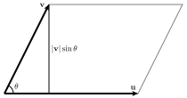

How and when is the cross product of two vectors defined?
What geometric information does the cross product provide?
The last two sections have introduced some basic algebraic operations and useful geometric interpretations for vector addition, scalar multiplication, and the dot product. In this section, we will define and explore another algebraic operation, the cross product, which measures some very useful geometric information related to pairs of vectors.
Remember that we use a right-hand coordinate system, as described in Section9.2. In particular, recall that the vectors \(\vi\text{,}\)\(\vj\text{,}\) and \(\vk\) are oriented as shown below in Figure9.5.1. We would like to think of a right handed coordinate system in terms of vectors that are not just \(\vi\text{,}\)\(\vj\text{,}\) and \(\vk\text{.}\) We will call the ordered list of vectors \(\vu\text{,}\)\(\vv\text{,}\)\(\vw\) a right-handed coordinate system if when you put the fingers of your right hand in the direction of \(\vu\) and curl your fingers in the direction of \(\vv\text{,}\) then the thumb of your right hand will point in the direction of \(\vw\text{.}\) Remember that to get this orientation correct, you may need to rotate your right hand to get your fingers to curl in the correct direction, which will then give you the proper direction for the third vector \(\vw\text{.}\)
Figure9.5.1.Basis vectors \(\vi\text{,}\)\(\vj\text{,}\) and \(\vk\text{.}\)
We would like to create a product of two vectors, which we will call the cross product, that creates a right handed coordinate system with the input vectors as the first two vectors in our coordinate system. So if \(\vu\) and \(\vv\) are not parallel, we want the cross product of \(\vu\) with \(\vv\) (denoted \(\vu \times \vv\)) to make \(\vu\text{,}\)\(\vv\text{,}\)\(\vu \times \vv\) a right-handed coordinate system. Additionally, we would like the cross product (as with all of our vector operations) to work well with linear combinations of vectors. Specifically, we want the following algebraic property to be satisfied:
An important difference to note here is that the cross product of two vectors will be a vector, whereas the dot product of two vectors gives a scalar.
Preview Activity9.5.1.
(a)
Our first task is to understand what it means to complete a right-handed coordinate system. For each of the cases below, you need to give a vector that fills in the blank to create a right-handed coordinate system. For example, the answer that would complete \(\vi, \vj, ???\) would be \(\vk\text{.}\) You should pay attention to when you have vectors that in opposite directions of \(\vi\) or \(\vj\) or \(\vk\text{.}\)
\(\displaystyle \vj,\vi, ???\)
\(\displaystyle -\vi,\vj, ???\)
\(\displaystyle \vk,\vi, ???\)
\(\displaystyle -\vi,-\vj, ???\)
\(\displaystyle \vk,\vj, ???\)
(b)
Explain why there is not a way to fill out \(vi,\vi, ???\) to be a right-handed coordinate system.
(c)
As we said in the introduction, we would like the cross product to make sense over vector sums (\((\vv+\vu) \times \vw = (\vv \times \vw) + (\vu \times \vw)\)). Compute each of the following geometrically:
\(\displaystyle \vi,\vk, ???\)
\(\displaystyle \vj,\vk, ???\)
\(\displaystyle \vi+\vj,\vk, ???\)
Be sure to note how your thumb is oriented in the last case and verify that the sum of the first two results gives you the last case.
(d)
We also want to make sure that the cross product works well with scalar multiplication.
What direction should the third vector in the right hand coordinate system be? \(2\vi,3\vj, ???\)
What direction should the third vector in the right hand coordinate system be? \(2\vk,\vj, ???\)
Note that \(3\vk=\vk+\vk\text{,}\) so \((3\vk) \times \vj = (\vk \times \vj) + (\vk \times \vj) + (\vk \times \vj)= ???\)
What do you think the result of \((4\vi)\times (-6\vj)\) will be?
Subsection9.5.1Computing the cross product
As we have seen in Preview Activity9.5.1, the cross product \(\vu\times\vv\) will need defined for two vectors \(\vu\) and \(\vv\) in \(\R^3\) and produces another vector in \(\R^3\text{.}\) Using the right-hand rule, we saw that
\(\vi\times\vj = \vk\)
\(\vj\times\vi = -\vk\)
\(\vi\times\vk = -\vj\)
\(\vk\times\vi = \vj\)
\(\vj\times\vk = \vi\)
\(\vk\times\vj = -\vi\)
We want the cross product to behave like we think a product should (e.g., the cross product distributes over vector addition), so using the ideas directly above, we can compute the cross product in terms of the components of general vectors. Applying these ideas of right-handed coordinate systems and the cross product working with linear combinations of vectors gives us the following:
At first, this may look intimidating and difficult to remember. However, if we rewrite the expression in Equation(9.5.1) using determinants, important structure emerges. The determinant of a \(2\times2\) matrix is
\begin{equation*}
\left|
\begin{array}{cc}
a \amp b \\
c \amp d
\end{array}
\right|
=ad - bc.
\end{equation*}
It follows that we can thus rewrite Equation(9.5.1) in the form
We will use the definition of cross product to check some of our work from Preview Activity9.5.1. First, we want to check a calculation like \(\vk \times \vi\) from part (a). We will write both \(\vk\) and \(\vi\) in their component forms of \(\langle 0,0,1\rangle\) and \(\langle 1,0,0\rangle\text{.}\) So \(\vk \times \vi\) will be computed as
Which should match our work of \(-24 \vk\) from the last part of the Preview Activity.
Activity9.5.2.
Suppose \(\vu = \langle 0, 1, 3\rangle\) and \(\vv = \langle 2, -1, 0\rangle\text{.}\) Use the formula (9.5.1) for the following.
(a)
Find the cross product \(\vu\times\vv\text{.}\)
(b)
Evaluate the dot products \(\vu\cdot(\vu\times\vv)\) and \(\vv\cdot(\vu\times\vv)\text{.}\) What does this tell you about the geometric relationship among \(\vu\text{,}\)\(\vv\text{,}\) and \(\vu\times\vv\text{?}\)
(c)
Find the cross product \(\vv\times \vi\text{.}\)
(d)
Multiplication of real numbers is associative, which means, for instance, that \((2\cdot 5)\cdot 3 = 2\cdot(5\cdot 3)\text{.}\) Is it true that the cross product of vectors is associative? For instance, is it true that \((\vu\times\vv)\times\vi = \vu\times(\vv\times\vi)\text{?}\)
(e)
Find the cross product \(\vu\times\vu\text{.}\)
The cross product satisfies the following properties, some of which were illustrated in Preview Activity9.5.1 and may be easily verified from the definition (9.5.1).
Properties of the cross product.
Let \(\vu\text{,}\)\(\vv\text{,}\) and \(\vw\) be vectors in \(\R^3\text{,}\) and let \(c\) be a scalar. Then
Just as we found for the dot product, the cross product provides us with useful geometric information. In particular, both the length and direction of the cross product \(\vu\times\vv\) encode information about the geometric relationship between \(\vu\) and \(\vv\text{.}\)
Subsection9.5.2The Length of \(\vu\times\vv\)
As we saw in part9.5.1.d, the magnitude of the vectors involved in a cross product will affect the length of the result. There are important differences in how the direction of the input vectors affect the cross product when compared to the input/output relationship of the dot product (Figure9.4.7). To investigate, we will compute the square of the length \(\Vert\vu\times\vv\Vert^2\) and denote by \(\theta\) the angle between \(\vu\) and \(\vv\text{,}\) as in Subsection9.4.2. The following simplification is not intuitive, but you can find through some significant algebra that
Note that the third property stated above says that \(\vu\times\vv = \vzero\) if \(\vu\) and \(\vv\) are parallel. This is reflected in Equation(9.5.2) since \(\sin(\theta)=0\) if \(\vu\) and \(\vv\) are parallel, which implies that \(\vu\times\vv = \vzero\text{.}\)
Equation (9.5.2) also has a geometric implication related to the parallelogram formed by two vectors \(\vu\) and \(\vv\text{,}\) as shown in Figure9.5.4.

Figure9.5.4.The parallelogram formed by \(\vu\) and \(\vv\)
In general, the area of a parallelogram is the product of its base and height. Based on the figure, we consider the base of the parallelogram to be \(\Vert\vu\Vert\) and the height to be \(\Vert\vv\Vert\sin(\theta)\text{.}\) This means that the area of the parallelogram formed by \(\vu\) and \(\vv\) is
The length, \(\Vert\vu \times \vv\Vert\text{,}\) of the cross product of vectors \(\vu\) and \(\vv\) is the area of the parallelogram determined by \(\vu\) and \(\vv\text{.}\)
Note also that if \(\vu = u_1\vi + u_2\vj + 0\vk\) and \(\vv = v_1\vi + v_2\vj + 0\vk\) are vectors in the \(xy\)-plane, then Equation(9.5.1) shows that the area of the parallelogram determined by \(\vu\) and \(\vv\) is \(\Vert\vu \times \vv\Vert = \vert u_1v_2-u_2v_1 \vert\) is the absolute value of the \(2 \times 2\) determinant \(\left|
\begin{array}{cc}
u_1 \amp u_2 \\
v_1 \amp v_2
\end{array}
\right|
\text{.}\) So the absolute value of a determinant of a \(2 \times 2 \) matrix is also the area of a parallelogram.
Activity9.5.3.
(a)
Find the area of the parallelogram formed by the vectors \(\vu = \langle 1,3, -2\rangle\) and \(\vv=\langle 3,0,1\rangle\text{.}\)
(b)
Find the area of the parallelogram in \(\R^3\) whose vertices are \((1,0,1)\text{,}\)\((0,0,1)\text{,}\)\((2,1,0)\text{,}\) and \((1,1,0)\text{.}\) (Hint: It might be helpful to draw a picture to see how the vertices are arranged so you can determine which vectors you might use.)
Subsection9.5.3The Direction of \(\vu\times\vv\)
Now that we understand the length of \(\vu\times\vv\text{,}\) we will investigate its direction more thoroughly. Remember from Preview Activity9.5.1 that cross product will of \(\vu\) and \(\vv\) will complete the right handed coordinate system, \(\vu, \vv, ????\text{.}\) In particular, the last vector in our right handed coordinate system will be at a \(90^\circ\) angle to the other vectors because your thumb makes a \(90^\circ\) angle with the plane that your fingers can extend and curl in.
We can verify this orthogonal relationship algebraically by computing \(\vu\cdot(\vu\times\vv)\text{.}\)
To summarize, we have \(\vu\cdot(\vu\times\vv) = 0\text{,}\) which implies that \(\vu\) is orthogonal to \(\vu\times\vv\text{.}\) A similar algebraic argument will show that \(\vv\) is orthogonal to \(\vu\times\vv\text{,}\) and thus the output of \(\vu\times\vv\) is a vector that is perpendicular to both input vectors, \(\vu\) and \(\vv\text{.}\) In other words, \(\vu\times\vv\) is perpendicular to the plane determined by \(\vu\) and \(\vv\text{.}\) Moreover, the direction of \(\vu\times\vv\) is determined by applying the right-hand rule to \(\vu\) and \(\vv\text{,}\) as we saw in Preview Activity9.5.1. In light of our earlier work that showed \(\Vert\vu\Vert \Vert\vv\Vert \sin(\theta) = \Vert\vu\times\vv\Vert.\text{,}\) we may now express \(\vu \times \vv\) in the following different way.
The cross product as normal vector.
Suppose that \(\vu\) and \(\vv\) are not parallel and that \(\vn\) is the unit vector perpendicular to the plane containing \(\vu\) and \(\vv\) determined by the right-hand rule. Then
There is yet one more geometric implication we may draw from this result. Suppose \(\vu\text{,}\)\(\vv\text{,}\) and \(\vw\) are vectors in \(\R^3\) that are not coplanar and that form a three-dimension parallelepiped as shown in Figure9.5.5.
Figure9.5.5.The parallelepiped determined by \(\vu\text{,}\)\(\vv\text{,}\) and \(\vw\)
The volume of the parallelepiped is determined by multiplying \(A\text{,}\) the area of the base, by the height \(h\text{.}\) As we have just seen, the area of the base is \(\Vert\vu\times\vv\Vert\text{.}\) Moreover, the height \(h=\Vert\vw\Vert\cos(\alpha)\) where \(\alpha\) is the angle between \(\vw\) and the vector \(\vn\text{,}\) which is orthogonal to the plane formed by \(\vu\) and \(\vv\text{.}\) Since \(\vn\) is parallel to \(\vu\times\vv\text{,}\) the angle between \(\vw\) and \(\vu\times\vv\) is also \(\alpha\text{.}\) This shows that
Find two unit vectors orthogonal to both \(\vu\) and \(\vv\text{.}\)
Find the volume of the parallelepiped formed by the vectors \(\vu\text{,}\)\(\vv\text{,}\) and \(\vw = \langle 3,3,1\rangle\text{.}\)
Find a vector orthogonal to the plane containing the points \((0,1,2)\text{,}\)\((4,1,0)\text{,}\) and \((-2,2,2)\text{.}\)
Given the vectors \(\vu\) and \(\vv\) shown below in Figure9.5.6, sketch the cross products \(\vu\times\vv\) and \(\vv\times\vu\text{.}\)
Figure9.5.6.Vectors \(\vu\) and \(\vv\)
Do the vectors \(\va = \langle 1,3,-2\rangle\text{,}\)\(\vb=\langle2,1,-4\rangle\text{,}\) and \(\vc=\langle 0, 1, 0\rangle\) in standard position lie in the same plane? Use the concepts from this section to explain.
Subsection9.5.4Torque is measured by a cross product
We have seen that the cross product enables us to produce a vector perpendicular to two given vectors, to measure the area of a parallelogram, and to measure the volume of a parallelepiped. Besides these geometric applications, the cross product also enables us to describe a physical quantity called torque.
Suppose that we would like to turn a bolt using a wrench as shown in Figure9.5.7. If a force \(\vF\) is applied to the wrench and \(\vr\) is the vector from the position on the wrench at which the force is applied to center of the bolt, we define the torque, \(\tau\text{,}\) to be
When a force is applied to an object, Newtons Second Law tells us that the force is equal to the rate of change of the objects linear momentum. Similarly, the torque applied to an object is equal to the rate of change of the objects angular momentum. In other words, torque will cause the bolt to rotate.
In many industrial applications, bolts are required to be tightened using a specified torque. Of course, the magnitude of the torque is \(\Vert\tau\Vert =\Vert\vF\times\vr\Vert=\Vert\vF\Vert\Vert\vr\Vert\Vert\sin(\theta)\text{.}\) Thus, to produce a larger torque, we can increase either \(\Vert\vF\Vert\) or \(\Vert\vr\Vert\text{,}\) which you may know if you have ever removed lug nuts when changing a flat tire. The ancient Greek mathematician Archimedes said: Give me a lever long enough and a fulcrum on which to place it, and I shall move the world. A modern spin on this statement is: Allow me to make \(\Vert\vr\Vert\) large enough, and I shall produce a torque large enough to move the world.
Might want to discuss this is why doorknobs and handles are put opposite of the hinge. Try to push a door open by pressing in the middle of the door. Is the force twice as large? What if you
Subsection9.5.5Comparing the dot and cross products
Finally, it is worthwhile to compare and contrast the dot and cross products.
\(\vu\cdot\vv\) is a scalar, while \(\vu\times\vv\) is a vector.
\(\vu\cdot\vv = \vv\cdot\vu\text{,}\) while \(\vu\times\vv = -\vv\times\vu\)
\(\vu\cdot\vv = \Vert\vu\Vert\Vert\vv\Vert\cos(\theta)\text{,}\) while \(\Vert\vu\times\vv\Vert = \Vert\vu\Vert\Vert\vv\Vert\sin(\theta)\text{.}\)
\(\vu\cdot\vv = 0\) if \(\vu\) and \(\vv\) are perpendicular, while \(\vu\times\vv = \vzero\) if \(\vu\) and \(\vv\) are parallel.
Subsection9.5.6Summary
The cross product is defined only for vectors in \(\R^3\text{.}\) The cross product of vectors \(\vu = u_1 \vi + u_2 \vj + u_3 \vk\) and \(\vv = v_1 \vi + v_2 \vj + v_3 \vk\) in \(\R^3\) is the vector
where \(\theta\) is the angle between \(\vu\) and \(\vv\) and \(\vn\) is a unit vector perpendicular to both \(\vu\) and \(\vv\) as determined by the right-hand rule.
The cross product of vectors \(\vu\) and \(\vv\) is a vector perpendicular to both \(\vu\) and \(\vv\text{.}\)
The magnitude \(\Vert\vu \times \vv\Vert\) of the cross product of the vectors \(\vu\) and \(\vv\) gives the area of the parallelogram determined by \(\vu\) and \(\vv\text{.}\) Also, the scalar triple product \(\Vert(\vu \times
\vv) \cdot \vw\Vert\) gives the volume of the parallelepiped determined by \(\vu\text{,}\)\(\vv\text{,}\) and \(\vw\text{.}\)
Exercises9.5.7Exercises
1.
If \(\mathbf{a} = \mathbf{i} + \mathbf{j} + 4 \mathbf{k}\) and \(\mathbf{b} = \mathbf{i} + \mathbf{j} + 4 \mathbf{k}\)
Compute the cross product \(\bf{a} \times \bf{b}\text{.}\)
Suppose \(\vec v\cdot \vec w=7\) and \(||\vec v\times\vec w|| = 2\text{,}\) and the angle between \(\vec v\) and \(\vec w\) is \(\theta\text{.}\) Find
(a)\(\tan\theta =\)
(b)\(\theta =\)
3.
You are looking down at a map. A vector \(\bf{u}\) with \(\left| \mathbf{u} \right|\) = 9 points north and a vector \(\mathbf{v}\) with \(\left| \mathbf{v} \right|\) = 10 points northeast. The crossproduct \(\mathbf{u} \times \mathbf{v}\) points:
A) south
B) northwest
C) up
D) down
Please enter the letter of the correct answer:
The magnitude \(\left| \mathbf{u} \times \mathbf{v} \right|\) =
4.
If \(\mathbf{a} = \mathbf{i} + 10 \mathbf{j} + \mathbf{k}\) and \(\mathbf{b} = \mathbf{i} + 16 \mathbf{j} + \mathbf{k}\text{,}\) find a unit vector with positive first coordinate orthogonal to both \(\mathbf{a}\) and \(\mathbf{b}\text{.}\)
\(\mathbf{i}\) + \(\mathbf{j}\) + \(\mathbf{k}\)
5.
Sketch the triangle with vertices \(O, P=\left(2,3,0\right)\) and \(Q=\left(0,3,7\right)\) and compute its area using cross products.
Area=
6.
Let \(A = \left(-3,4,1\right)\text{,}\)\(B = \left(2,-1,3\right)\text{,}\) and \(P = (k,k,k)\text{.}\) The vector from \(A\) to \(B\) is perpendicular to the vector from \(A\) to \(P\) when \(k\) = .
7.
Find two unit vectors orthogonal to \(\mathbf a = \langle -2, 1, -5\rangle\) and \(\mathbf b = \langle -1, -1, -2\rangle\)
Enter your answer so that the first non-zero coordinate of the first vector is positive.
First Vector: \(\langle\), , \(\rangle\)
Second Vector: \(\langle\), , \(\rangle\)
8.
Use the geometric definition of the cross product and the properties of the cross product to make the following calculations.
For any scalar \(c\) and any vector \(\vec{v}\text{,}\) we have \(||c\vec{v}|| = c ||\vec{v}||\text{.}\)
10.
A bicycle pedal is pushed straight downwards by a foot with a 36 Newton force. The shaft of the pedal is 20 cm long. If the shaft is \(\pi / 5\) radians past horizontal, what is the magnitude of the torque about the point where the shaft is attached to the bicycle? Nm
11.
Let \(\vu = 2\vi + \vj\) and \(\vv = \vi + 2\vj\) be vectors in \(\R^3\text{.}\)
Without doing any computations, find a unit vector that is orthogonal to both \(\vu\) and \(\vv\text{.}\) What does this tell you about the formula for \(\vu \times \vv\text{?}\)
Using the properties of the cross product and what you know about cross products involving the fundamental vectors \(\vi\) and \(\vj\text{,}\) compute \(\vu \times \vv\text{.}\)
Next, use the determinant version of Equation(9.5.1) to compute \(\vu \times \vv\text{.}\) Write one sentence that compares your results in (a), (b), and (c).
Find the area of the parallelogram determined by \(\vu\) and \(\vv\text{.}\)
12.
Let \(\vx = \langle 1, 1, 1 \rangle\) and \(\vy = \langle 0, 3, -2 \rangle\text{.}\)
Are \(\vx\) and \(\vy\) orthogonal? Are \(\vx\) and \(\vy\) parallel? Clearly explain how you know, using appropriate vector products.
Find a unit vector that is orthogonal to both \(\vx\) and \(\vy\text{.}\)
Express \(\vy\) as the sum of two vectors: one parallel to \(\vx\text{,}\) the other orthogonal to \(\vx\text{.}\)
Determine the area of the parallelogram formed by \(\vx\) and \(\vy\text{.}\)
13.
Consider the triangle in \(\R^3\) formed by \(P(3, 2, -1)\text{,}\)\(Q(1, -2, 4)\text{,}\) and \(R(4, 4, 0)\text{.}\)
Find \(\overrightarrow{PQ}\) and \(\overrightarrow{PR}\text{.}\)
Observe that the area of \(\triangle PQR\) is half of the area of the parallelogram formed by \(\overrightarrow{PQ}\) and \(\overrightarrow{PR}\text{.}\) Hence find the area of \(\triangle PQR\text{.}\)
Find a unit vector that is orthogonal to the plane that contains points \(P\text{,}\)\(Q\text{,}\) and \(R\text{.}\)
Determine the measure of \(\angle QPR\text{.}\)
14.
One of the properties of the cross product is that \((\vu+\vv) \times \vw = (\vu \times \vw) + (\vv \times \vw)\text{.}\) That is, the cross product distributes over vector addition on the right. Here we investigate whether the cross product distributes over vector addition on the left.
Let \(\vu = \langle 1,2,-1 \rangle\text{,}\)\(\vv = \langle 4,-3,6 \rangle\text{,}\) and \(\vw = \langle 4,7,2 \rangle\text{.}\) Calculate
for any vectors \(\vx\text{,}\)\(\vy\text{,}\) and \(\vz\) in \(\R^3\text{.}\)
15.
Let \(\vu = \langle u_1, u_2, u_3 \rangle\text{,}\)\(\vv = \langle v_1, v_2, v_3 \rangle\text{,}\) and \(\vw = \langle w_1, w_2, w_3 \rangle\) be vectors in \(\R^3\text{.}\) In this exercise we investigate properties of the triple scalar product \((\vu \times \vv) \cdot \vw\text{.}\)
Show that \(\left|\begin{array}{ccc}
u_1 \amp u_2 \amp u_3 \\
v_1 \amp v_2 \amp v_3 \\
w_1 \amp w_2 \amp w_3
\end{array} \right|\Vert = -\left|\begin{array}{ccc}
v_1 \amp v_2 \amp v_3 \\
u_1 \amp u_2 \amp u_3 \\
w_1 \amp w_2 \amp w_3
\end{array} \right|\Vert\text{.}\) Conclude that interchanging the first two rows in a \(3 \times 3\) matrix changes the sign of the determinant. In general (although we wont show it here), interchanging any two rows in a \(3 \times 3\) matrix changes the sign of the determinant.
Use the results of parts (a) and (b) to argue that
Now suppose that \(\vu\text{,}\)\(\vv\text{,}\) and \(\vw\) do not lie in a plane when they eminate from a common initial point.
Given that the parallepiped determined by \(\vu\text{,}\)\(\vv\text{,}\) and \(\vw\) must have positive volume, what can we say about \((\vu \times \vv) \cdot \vw\text{?}\)
Now suppose that \(\vu\text{,}\)\(\vv\text{,}\) and \(\vw\) all lie in the same plane. What value must \((\vu \times \vv) \cdot \vw\) have? Why?
Explain how (i.) and (ii.) show that if \(\vu\text{,}\)\(\vv\text{,}\) and \(\vw\) all eminate from the same initial point, then \(\vu\text{,}\)\(\vv\text{,}\) and \(\vw\) lie in the same plane if and only if \((\vu \times \vv) \cdot \vw = 0\text{.}\) This provides a straightforward computational method for determining when three vectors are co-planar.